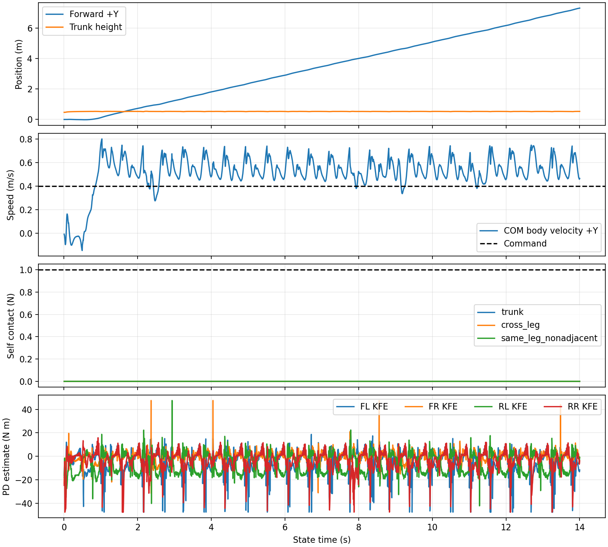

보행·자가 접촉 종합: 통과
Slurm 2280 · ws1 · compute/admin · ROS2 Jazzy · Isaac Sim · 명령 +Y 0.4 m/s · 물리 200 Hz / 정책 50 Hz
USD: quadruped_20261011/quadruped_robot.usda. 새 질량 23.094 kg, 기존 질량 45.451 kg. 정책은 기존 채택 V15 job339/model_11699, depth 학생은 V12 best.pt를 사용했다.
| 측정 | 결과 | 사전에 지정한 기준 |
|---|---|---|
| 기록 물리 구간 | 14.0000 s | 요청 14 s 전부 완료 |
| 전방 진행 | 7.3109 m | 14 s에서 ≥ 3.6 m |
| 속도 MAE (첫 2 s 이후) | 0.1499 m/s | ≤ 0.15 m/s |
| 몸통 최저 높이 | 0.4683 m | ≥ 0.20 m, 기울기 ≤ 60° |
| 비인접 쌍 최대 접촉 | 0.0000 N | ≤ 1 N |
실행 오류: None

속도 오차 0.1499 m/s는 0.1500 m/s 기준에 가깝다. 측정한 첫 2 s 이후 평균 전방 속도는 0.5472 m/s로 0.4 m/s 명령보다 빠르다. 이 실행만으로 속도 추종의 충분한 여유를 확인한 것은 아니다.
trunk: 0.000 N · cross_leg: 0.000 N · same_leg_nonadjacent: 0.000 N
CAD 원본의 67개 convexHull을 사용하고 self-collision을 켰다. 13개 rigid body 중 비인접 66쌍을 양방향 접촉 센서로 확인했다. PhysX가 기본적으로 제외하는 직접 연결 관절 12쌍은 이 판정에 포함되지 않는다. 접촉력 1 N 이하 판정은 이 실행 구간의 관측 결과다.
| 관절 | 토크 RMS (Nm) | 토크 피크 (Nm) | 추정 전류 RMS (A) |
|---|---|---|---|
| FL_HAA | 8.22 | 24.55 | 6.69 |
| FL_HFE | 9.59 | 47.52 | 6.66 |
| FL_KFE | 11.48 | 47.52 | 7.98 |
| FR_HAA | 8.54 | 24.55 | 6.95 |
| FR_HFE | 9.70 | 43.16 | 6.74 |
| FR_KFE | 4.97 | 47.52 | 3.45 |
| RL_HAA | 5.81 | 24.55 | 4.73 |
| RL_HFE | 11.67 | 46.33 | 8.10 |
| RL_KFE | 10.60 | 47.52 | 7.36 |
| RR_HAA | 8.47 | 24.55 | 6.88 |
| RR_HFE | 9.04 | 43.64 | 6.28 |
| RR_KFE | 9.94 | 47.52 | 6.90 |
통계는 실제 기록 구간 전체의 값이다. 토크는 명령 적용 직전의 cap 제한 implicit PD 추정치이며 PhysX에서 측정한 구동 토크가 아니다. 전류는 τ/(Kt×감속비), 효율 1 가정으로 HAA 1.23, HFE/KFE 1.44 Nm/A를 사용했다. 배터리 입력 전류와 다르다.
| 다리 | CAD 다리 | HAA 부호 | HFE 부호 | KFE 부호 |
|---|---|---|---|---|
| FL | FL | -1 | -1 | +1 |
| FR | FR | -1 | +1 | -1 |
| RL | BL | +1 | -1 | +1 |
| RR | BR | +1 | +1 | -1 |
관절 위치·속도·토크 모두 같은 부호로 변환한다. 새 base COM을 USD에서 읽어 원점 속도를 COM 속도로 보정한다. 모델 질량·관성·충돌 형상을 원본대로 사용했고, 구동기 설정은 V15의 Kp 300/Kd 8, HAA 24.8/HFE·KFE 48 Nm, armature 0.02, friction 0.3을 적용했다. 카메라는 V15의 84×84 depth 장착 위치와 방향으로 런타임에 추가했다.
ssh -o ClearAllForwardings=yes ws1
sbatch --partition=compute --qos=admin /home/shanghun1404/v15_cad_20261011/config/experiments/v15_cad_20261011/eval.sbatch 14 42
ROS2 패키지 빌드 후: ros2 launch v151_ros2_control v15_cad.launch.py actor_checkpoint:=... student_checkpoint:=...
Isaac 센서/브리지 namespace는 /v15cad, 걷기 명령은 /v15cad/cmd_vel의 linear.y이다.
요약 JSON · 프로파일·해시 · 원본 결과 · 원본 시계열 · USD 비교 · 실제 DDS 정책 동등성 · 매핑·명령 자료형 테스트
검증 범위는 선 자세에서 시작한 평지 V15 보행이다. 새 USD의 앉았다 일어서기, 계단, 실물 구동 결과는 이 보고서에 포함되지 않는다.